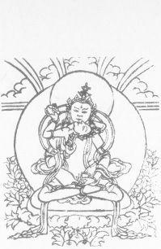

SEXUAL ENERGY

There are seven focal points of psychic energy in the body. These points are called chakras. Each center is associated with a different vibrational expression of the energy—from the first chakra which works with the grossest form of this energy to the seventh chakra which works with the energy in its finest form. Just as a personality profile can describe an individual’s dominant personality characteristics, so a person can be described in terms of the chakras in which his energy is received and dissipated.
There are certain labels which can be affixed to these chakras to define the dominant concern of an individual whose primary energy expression is fixed at that particular level. Thus the first chakra is associated with survival, a jungle or animal mentality. The second chakra is associated with reproduction and sexual gratification. The third chakra concerns power and mastery. These three chakras are the focal points for most of the energy presently used by man in his worldly endeavors. These three chakras are primarily concerned with the use of energy for the maintenance and enhancement of the ego.
It is only when we arrive at the fourth chakra, the heart chakra, that we enter into a realm which starts to transcend the ego. This fourth chakra is primarily concerned with compassion. The fifth is concerned with the seeking of God. The sixth (located between the eyebrows) is concerned with wisdom (the third eye); and the seventh, with full enlightenment or union.
The spiritual path can be conceived, from an energy point of view, as the path up the spine . . . that is, the movement and transformation of energy from the lower to the higher chakras . . . the purification of energy. With this definition in mind, it is apparent that any use of energy which further strengthens the hold, or intensity, of the lower chakras interferes with the spiritual progress.
The experience and habits associated with lust are the domain of the second chakra. Freud was the master spokesman of the person who is fixated in the second chakra, just as Adler was the spokesman for the third chakra, and perhaps Jung the spokesman of the fourth.
In our Western culture there has been such an investment in the models of man associated with the second and third chakra (sex and power) that we have developed strong and deeply held habits of perceiving the inner and outer universe in these terms. Though we may realize intellectually that the spiritual journey requires the transformation of energy from these preoccupations to higher centers, we find it difficult to override these strong habits which seem to be reinforced by the vibration of the culture in which we live.
Thus it seems “normal” to have certain ego needs with regard to sex and power. It is difficult for us to comprehend that what is normal for a second-chakra preoccupied person is hardly normal for a fourth-chakra person.
A second-chakra person, as so well described by Freud, thinks of everything as sexual in nature . . . a pencil is phallic, political power is sexual potency, etc. Freud describes religion as sublimated sexuality. A third-chakra person sees it all in terms of power or mastery. Even his sexual activity is seen in that light.
All “takes” of the Universe in terms of the first, second and third chakra are profane. That is, they maintain and enhance man’s illusion of separateness. Every time you live out an act in terms (habits of thought) of a lower chakra, you strengthen the hold of that chakra.
There are two strategies with regard to the very powerful energies localized at the level of the second or sexual chakra in human beings. You can avoid arousing these energies and simultaneously work from within to transmute these latent forces into spiritual energy. This requires sexual continence and is called brahmacharya. The alternative is to continue to arouse the second chakra energies and to attempt to direct these now manifest energies into spiritual realms. This technique is known as sexual tantra.
Brahmacharya
Brahmacharya—sexual continence—is a specific process of taking energy you might otherwise use in second chakra acts and moving the energy up the spine into the higher chakras. The purpose is to generate or collect energy which you can use in the service of becoming enlightened. Most brahmacharyas are converting and moving the energy up to the higher centers so effectively that they experience little of the sexual frustration that someone who is “celibate” in the usual sense might. They experience higher energy of the specific nature that is useful in breaking through in meditation into the state of Sat Chit Ananda. The techniques involved include primarily pranayam, mantra, diet, and the avoidance of second chakra stimuli.
From a habitual Western vantage point it looks as if such a person is giving up something and must be suffering. But the true brahmacharya is not only not suffering, but is often experiencing far higher and more permanent states of bliss than can be experienced through the lower chakras.
Sexual Tantra
In bhakti yoga—the yoga of devotion—the highest form of the method (as reflected in the story of Krishna and the Gopis) is the relation of devotee to God as lover to beloved. The gopis (milkmaids) are in love with Krishna—the young handsome boy with the flute. On autumn evenings by the full moon he would play his flute by the river bank and call the gopis to him. And there he would manifest himself in 16,000 forms—one for each gopi—and proceed to make love to each in the way most desired by her. This brought all the energy contained in the desire for merging that exists between a lover and the beloved (as two, i.e., dualism) into the service of union in total love with God.
Krishna says in the Bhagavad Gita, “Do what you do but dedicate the fruits of your acts to me”—all acts, and the act of sex is no exception.
To practice sexual tantra, total truth and total trust are required. You and your partner must both consciously understand that you are working together as an act of purification to burn away all impurities so that you may become ONE. You have agreed to share karma. This has nothing to do with any specific acts either now or later, it only implies that there is no holding back or unwillingness to accept how it is at this moment.
It is totally Here and Now. All fantasies are shared and brought to the Here and Now. Thoughts must be openly, fully openly, shared until the paranoia attendant to lust has been replaced by the luxurious warmth of love.
The practice starts with meditation together and after perhaps the sharing of a cardamon seed. Slowly the dance evolves . . . the dance in which every breath . . . touch . . . movement . . . even thought . . . is totally savoured (compassionately understood) by the one consciousness that you are sharing. You are both man and you are both woman . . . and there is an act in which two bodies are involved, but the act (like two hands clapping) is a unity experienced by a single consciousness.
The body of the partner becomes the body of Ram or the Divine Mother. Each touch or kiss is an act of devotion to that sacred being. The entire experience is the act of worship and the orgasm itself ceases to be of paramount importance.
The difficulty with this method, of course, is the tendency to get lost in the personal sensual gratification which draws you and your partner apart and casts you back into a second chakra dance which merely once again perpetuates the illusion of separateness. There are numerous specific techniques which reduce the risk of losing your center. An example is the mathuna position in which the woman sits astride the man. This position slows down the arousal process and the orgasm, thus allowing the partners to remain conscious throughout the entire practice.
None of us who are collaborating in the preparation of this manuscript are sufficiently evolved in the use of this method to present this section in a more definitive fashion at this time.
A woman once came to Mahatma Gandhi with her little boy. She asked, “Mahatma-ji, tell my little boy to stop eating sugar.”
“Come back in three days,” said Gandhi.
In three days the woman and the little boy returned and Mahatma Gandhi said to the little boy, “Stop eating sugar.”
The woman asked, “Why was it necessary for us to return only after three days for you to tell my little boy that?”
The Mahatma replied: “Three days ago I had not stopped eating sugar.”